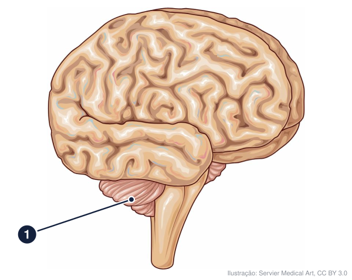
bio-i01 · B08.3
Qual parte do encéfalo é indicada pelo número 1?
→ cerebelo
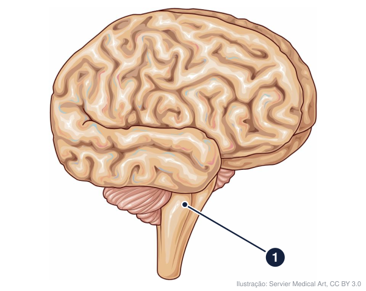
bio-i02 · B08.3
Qual parte do encéfalo é indicada pelo número 1?
→ tronco encefálico
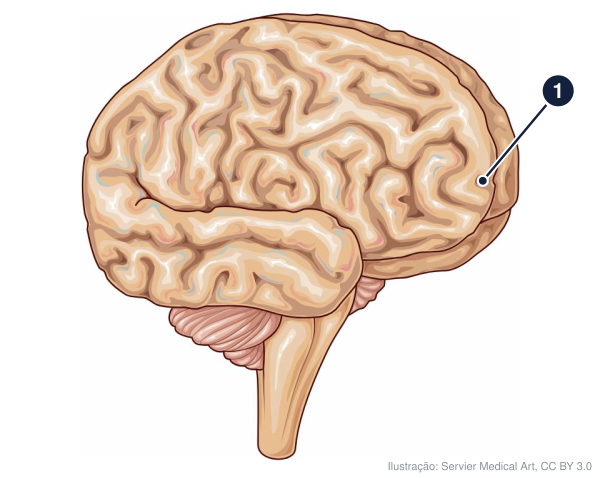
bio-i03 · B08.3
Qual parte do encéfalo é indicada pelo número 1?
→ lobo frontal
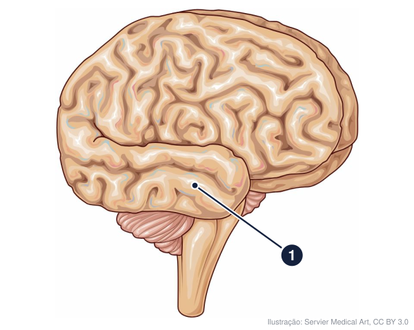
bio-i04 · B08.3
Qual parte do encéfalo é indicada pelo número 1?
→ lobo temporal
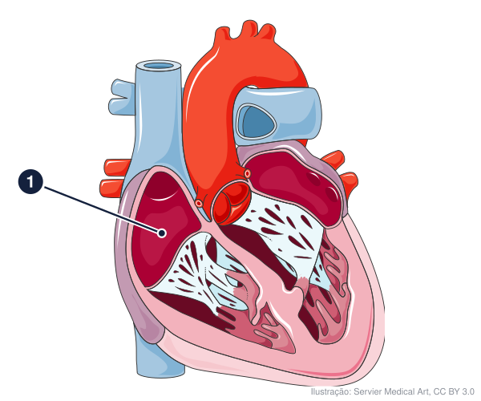
bio-i05 · B07.4
Qual estrutura é indicada pelo número 1?
→ átrio direito
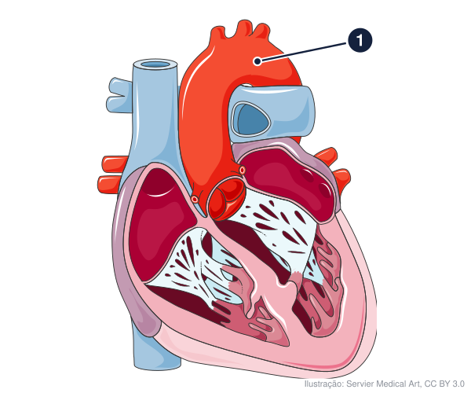
bio-i06 · B07.4
Qual estrutura é indicada pelo número 1?
→ aorta
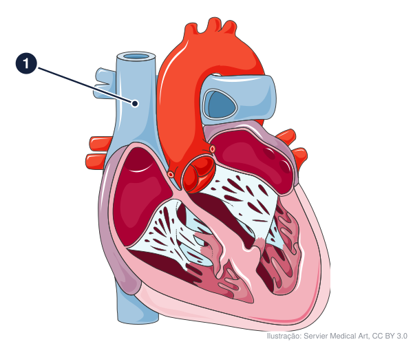
bio-i07 · B07.4
Qual estrutura é indicada pelo número 1?
→ veia cava superior
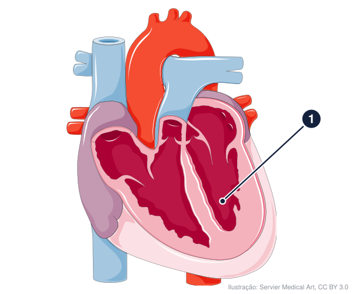
bio-i08 · B07.4
Qual estrutura é indicada pelo número 1?
→ ventrículo esquerdo
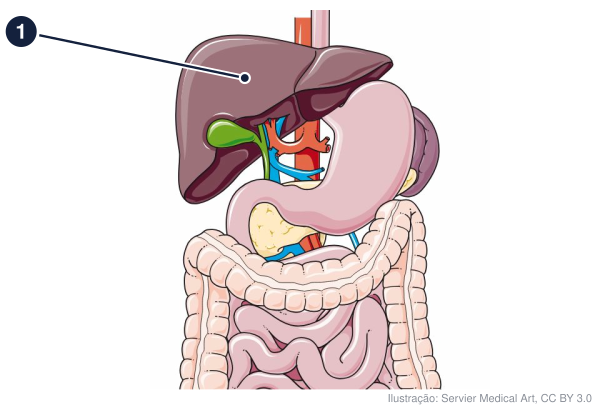
bio-i09 · B07.2
Qual estrutura é indicada pelo número 1?
→ fígado
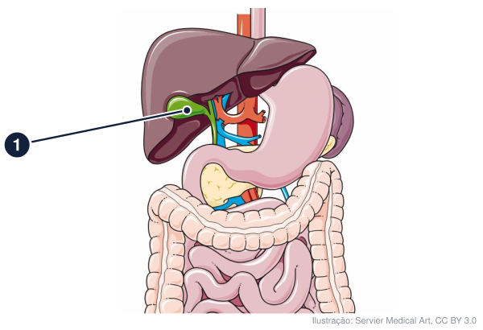
bio-i10 · B07.2
Qual estrutura é indicada pelo número 1?
→ vesícula biliar
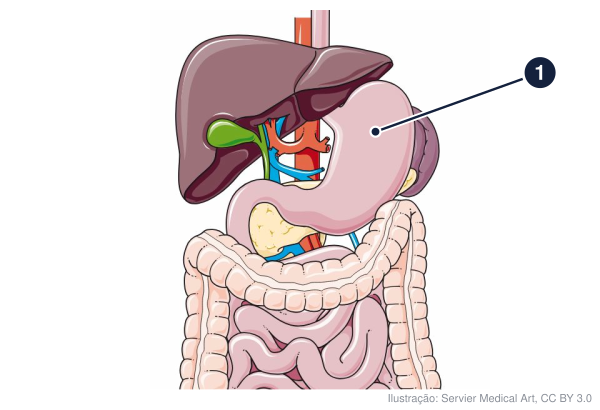
bio-i11 · B07.2
Qual estrutura é indicada pelo número 1?
→ estômago
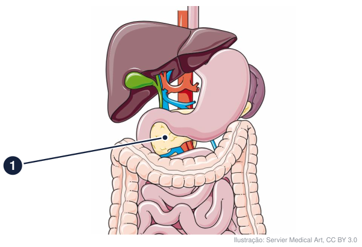
bio-i12 · B07.2
Qual estrutura é indicada pelo número 1?
→ pâncreas
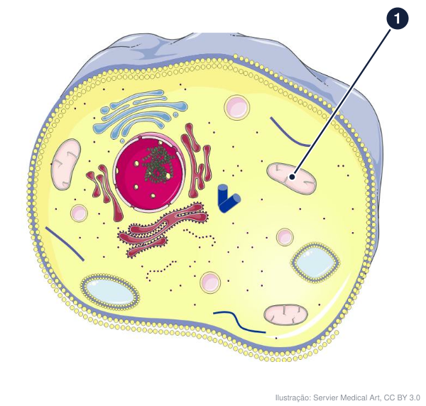
bio-i13 · B01.5
Qual organela é indicada pelo número 1?
→ mitocôndria
bio-i14 · B01.4
Qual organela é indicada pelo número 1?
→ complexo golgiense
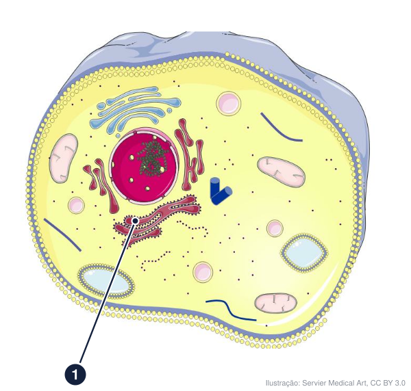
bio-i15 · B01.4
Qual organela é indicada pelo número 1?
→ retículo endoplasmático rugoso
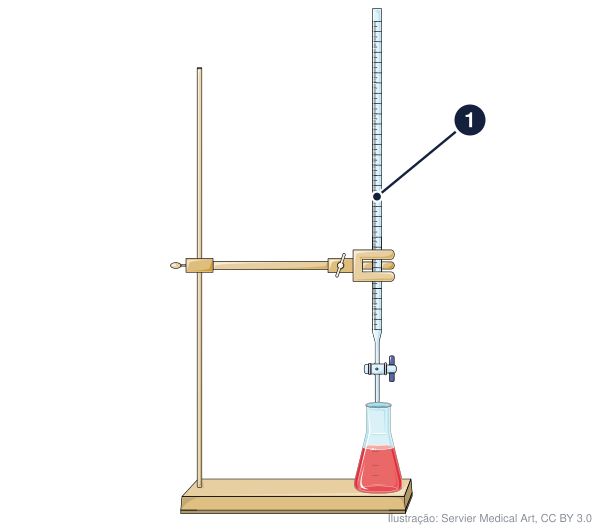
qui-i01 · Q05.2
Qual vidraria é indicada pelo número 1?
→ bureta
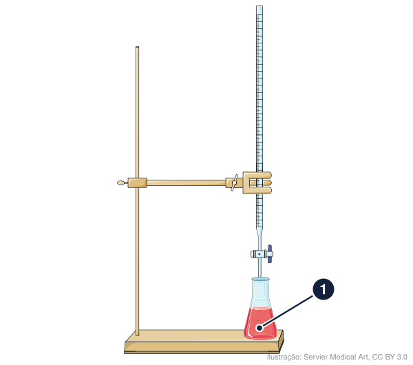
qui-i02 · Q05.2
Qual vidraria é indicada pelo número 1?
→ erlenmeyer
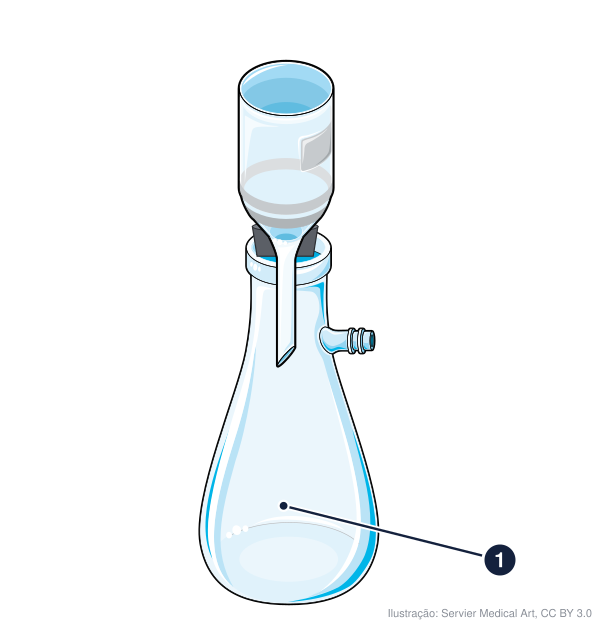
qui-i03 · Q03.5
Qual vidraria é indicada pelo número 1?
→ kitassato
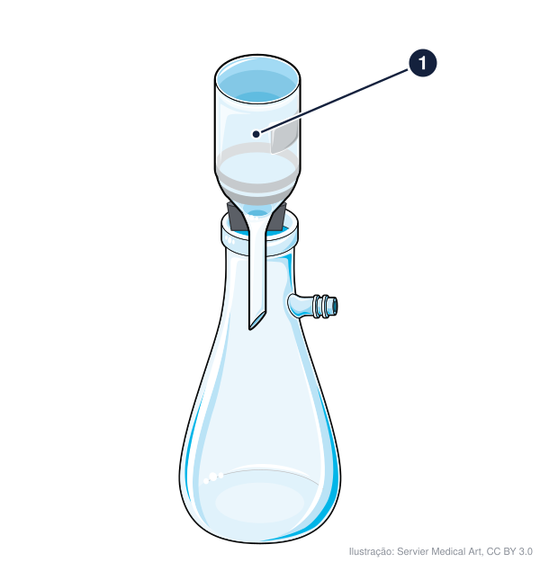
qui-i04 · Q03.5
Qual vidraria é indicada pelo número 1?
→ funil de Büchner
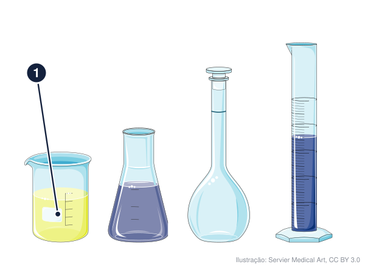
qui-i05 · Q05.2
Qual vidraria é indicada pelo número 1?
→ béquer
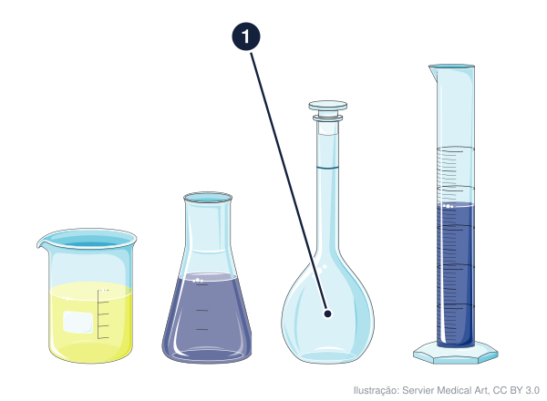
qui-i06 · Q05.2
Qual vidraria é indicada pelo número 1?
→ balão volumétrico
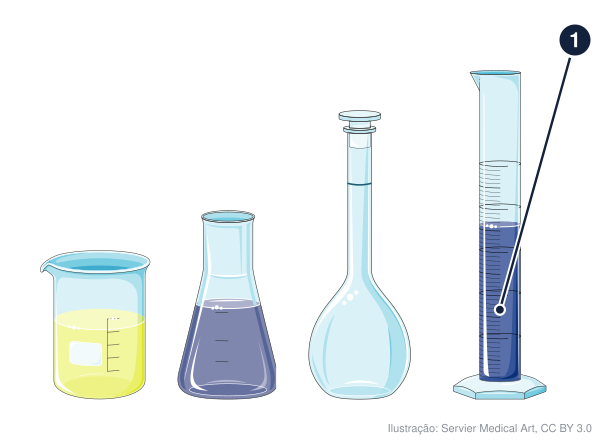
qui-i07 · Q05.2
Qual vidraria é indicada pelo número 1?
→ proveta
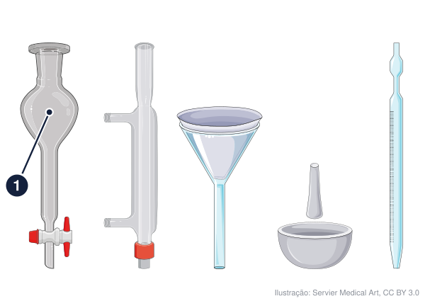
qui-i08 · Q03.5
Qual vidraria é indicada pelo número 1?
→ funil de separação
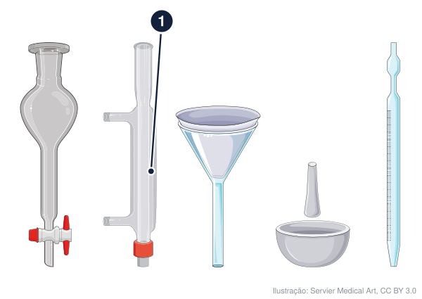
qui-i09 · Q03.5
Qual vidraria é indicada pelo número 1?
→ condensador
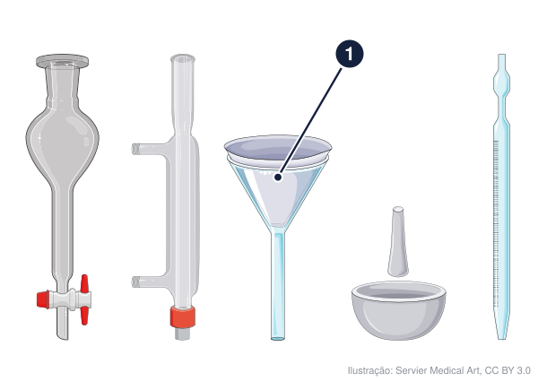
qui-i10 · Q03.5
Qual vidraria é indicada pelo número 1?
→ funil
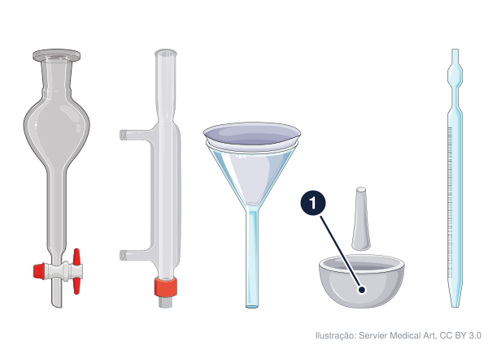
qui-i11 · Q03.5
Qual vidraria é indicada pelo número 1?
→ almofariz
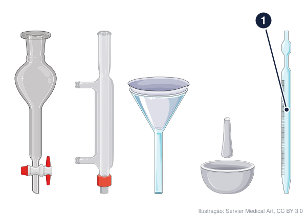
qui-i12 · Q05.2
Qual vidraria é indicada pelo número 1?
→ pipeta graduada
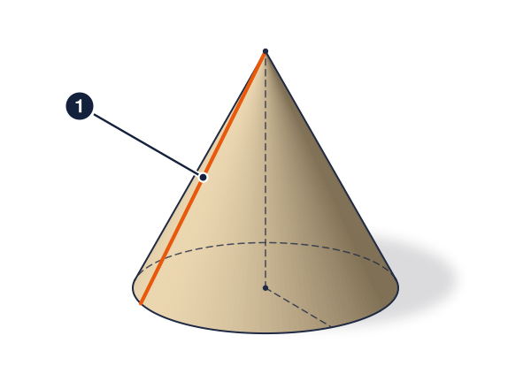
mat-i01 · M11.3
Qual elemento do sólido é indicado pelo número 1?
→ geratriz
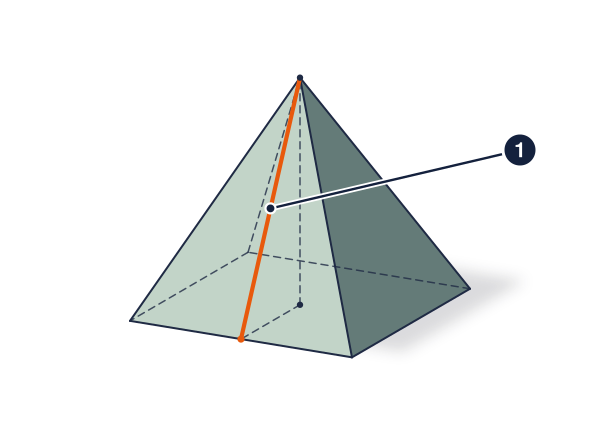
mat-i02 · M11.3
Qual elemento do sólido é indicado pelo número 1?
→ apótema da pirâmide
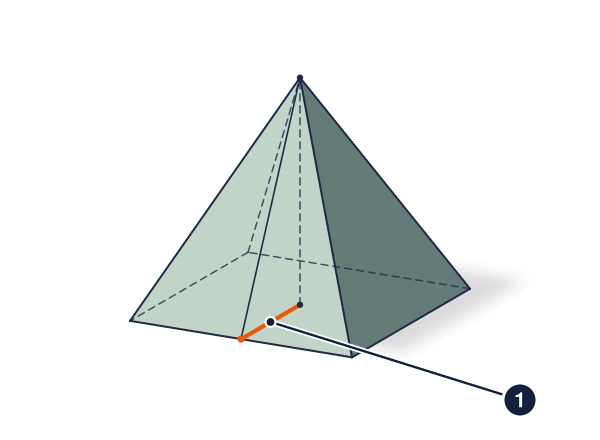
mat-i03 · M11.3
Qual elemento do sólido é indicado pelo número 1?
→ apótema da base
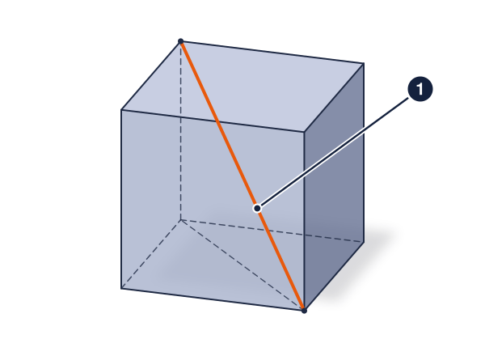
mat-i04 · M11.1
Qual elemento do sólido é indicado pelo número 1?
→ diagonal do cubo
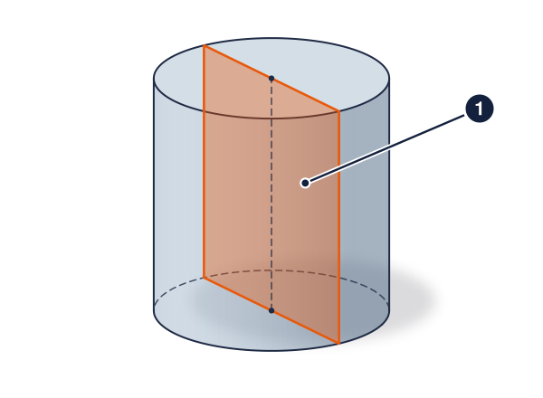
mat-i05 · M11.2
Qual elemento do sólido é indicado pelo número 1?
→ secção meridiana
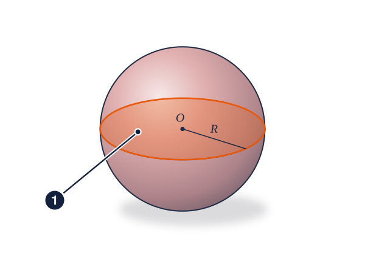
mat-i06 · M11.4
Qual elemento do sólido é indicado pelo número 1?
→ círculo máximo
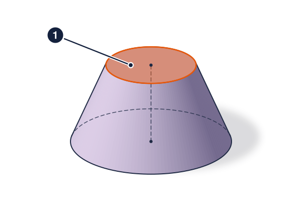
mat-i07 · M11.5
Qual elemento do sólido é indicado pelo número 1?
→ base menor
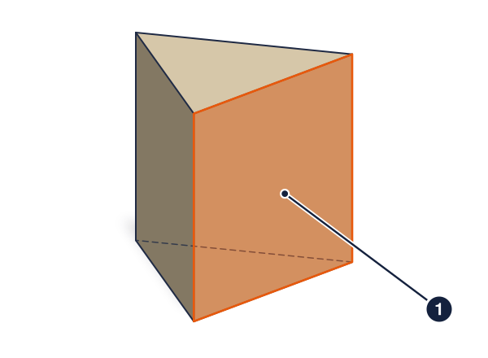
mat-i08 · M11.1
Qual elemento do sólido é indicado pelo número 1?
→ face lateral